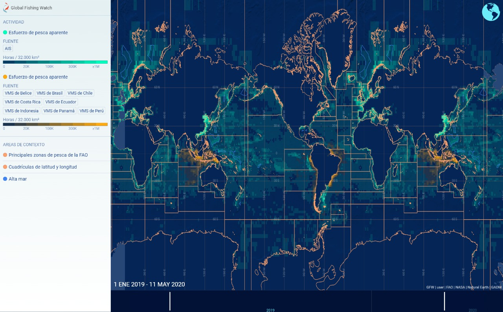
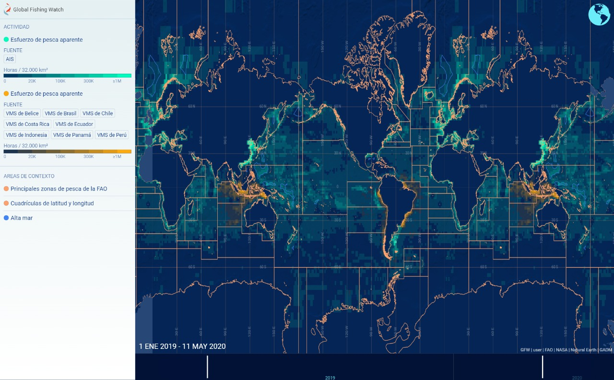

¿Se acabará el pescado para el 2048?
Si bien es cierto que la pesca sustenta una parte económica de cada país, también es cierto que la pesca está acabando con los océanos de forma exponencial y por ello debemos dejarlos respirar. Una posible solución es reducir el consumo o no consumirlo, así como, exigir políticas de no subsidio a la industria.
Es muy complejo cambiar nuestros hábitos y paradigmas pero técnicas de pesca de arrastre, de redes, de purse seine u otro no garantizan la pesca de una sola especie y por el contrario acaban con ecosistemas completos. Arrasando con flora y fauna marítima.


 

Finalmente, la pesca por sí misma deja una huella impresionante en los mares. Aquí podemos observar como impacta cada especie en diferente medida a la huella de carbono. Las imágenes de la izquierda son imágenes satelitales, en las cuales se presume el tráfico de embarcaciones pesqueras específicas. Podemos observar cómo el consumo en 2012 por año mantenía cierto equilibrio entre consumo, tráfico y permitía una cierta pesca sustentable. En 2019 podemos observar como casi no existen superficies marítimas no explotadas ni exploradas y en 2022 podemos ver una reducción en las operaciones debido al COVID. La invitación que queremos hacerles con este sitio, es darle un respiro a los océanos para regresarles su majestuosidad y también para poder seguir habitando este hermoso planeta como seres vivos. Todos necesitamos de todos. Lo que hagamos hoy será el futuro de otras generaciones. La consciencia que logremos hoy, será la sustentabilidad entre humanos, naturaleza y planeta. ¡DALE UN RESPIRO AL MUNDO Y REDUCE O NO CONSUMAS MARISCOS!